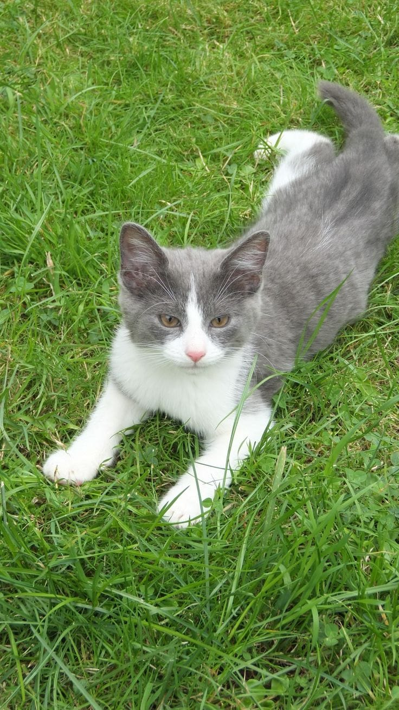
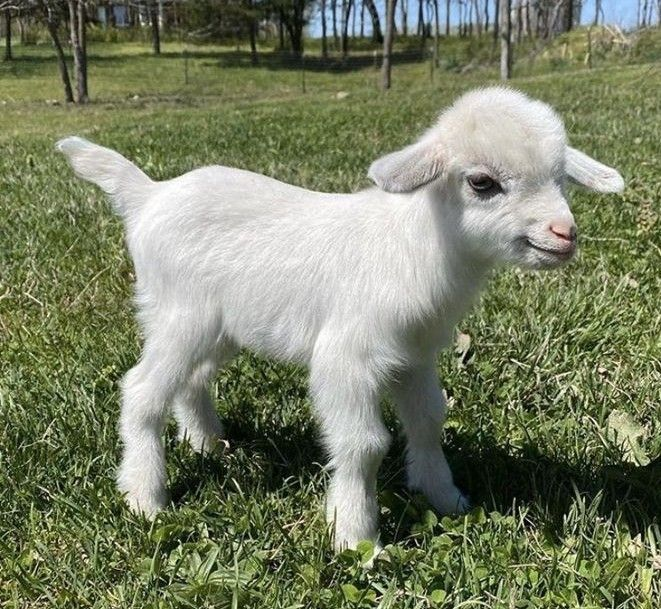
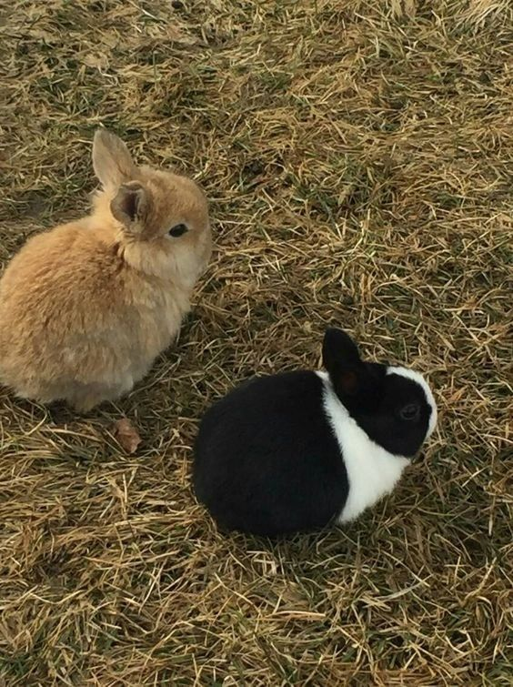
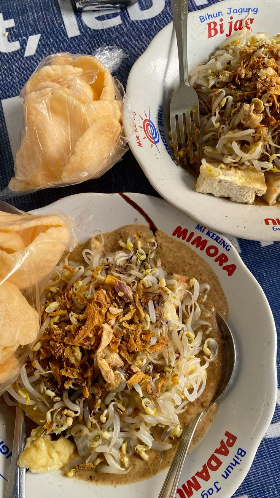
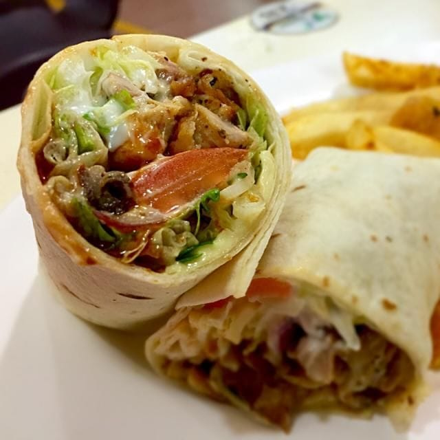

Katalog
Selamat datang di katalog saya! berikut adalah beberapa hal yang saya sukai.
Hewan Kesukaan
Kucing
Kucing bisa jadi temen di rumah, terutama saat sedang sendiri atau butuh
teman.

Kambing PYGMY
Kambing pygmy kecil, lucu, sama gemes dan bentuknya unik, terus banyak
tingkah.

Kelinci
kelinci gemesin bulu-bulunya lembut, mukanya polos.

Makanan Kesukaan
Ketoprak
Ketoprak simpel tapi enak banget ada tahu, bihun, tauge, bumbu kacang.

Kebab
KEbab enak isinya banyak dan gampang dimakan apalagi kalau sausnya banyak.
